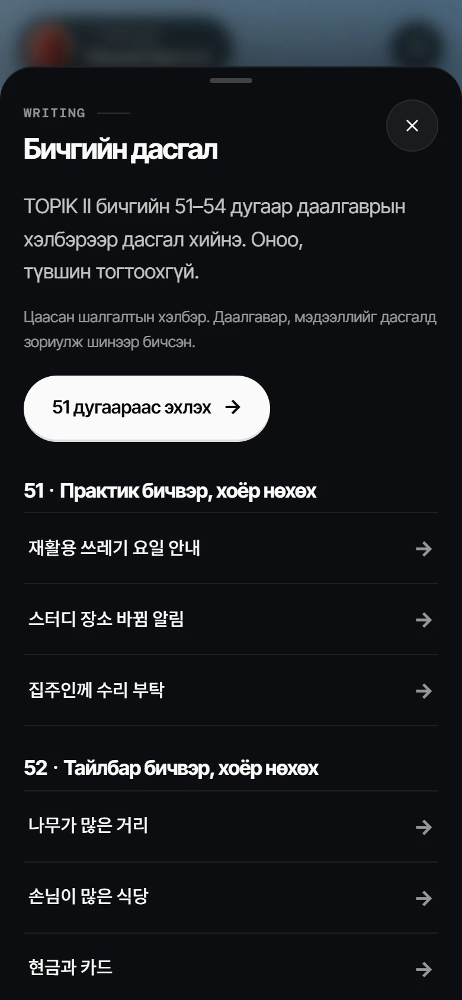

SYNK LABTOPIK II · 4
Төгсөхөд TOPIK 4-р түвшин дутуу байна уу?
졸업까지 TOPIK 4급이 모자라요?
Долоо хоног бүр бичвэрээ засуулна
10 хүн бүрдвэл анги нээгдэнэ
Төгсөхөд TOPIK 4-р түвшин дутуу байна уу?
졸업까지 TOPIK 4급이 모자라요?
Энэ хариулт зөв үү?
이 답, 인정될까요?
택배가 도착하면 문자 메시지로 알려 드립니다. 문자를 받은 학생은 ( ㉠ ). 사무실은 평일 오전 9시부터 오후 6시까지 엽니다.
㉠ 학생증을 가지고 사무실에 와서 택배를 찾아가세요.Хариултаа сэтгэгдэлд бичээрэй 👇
Бичгийн 20 дасгал — үнэгүй
TOPIK II 쓰기 51~54, 20문항 무료

synk.im/world · бодит дэлгэц